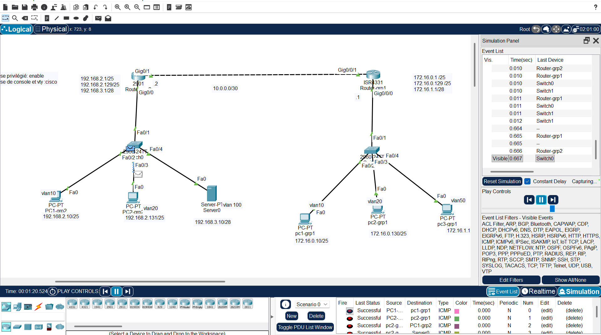
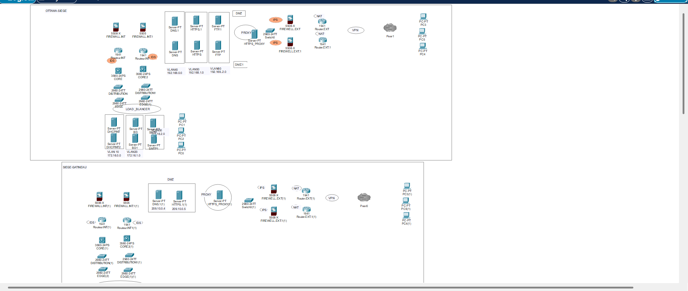
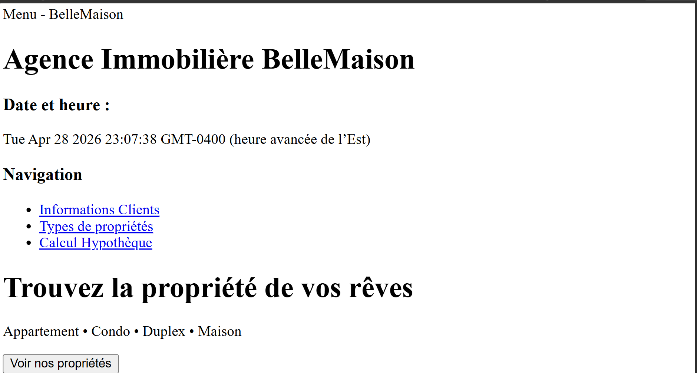
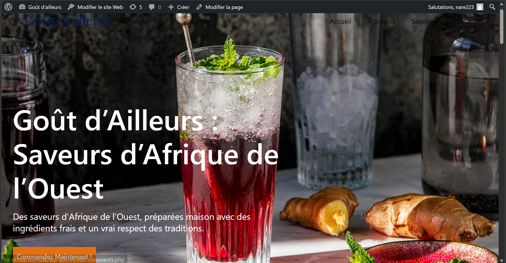

Mes projets
Voici quelques projets réalisés durant ma formation en informatique.

Réseau d’entreprise multi-sites
J’ai conçu et simulé un réseau d’entreprise composé d’un siège et de deux campus. Le projet consistait à assurer la communication entre les différents sites en configurant l’architecture réseau et les adresses IP.
Projet académique réalisé avec Packet Tracer

Architecture réseau sécurisée
Mise en place d’une architecture réseau sécurisée avec analyse du trafic. J’ai utilisé Wireshark pour observer les paquets et comprendre les mécanismes de protection des réseaux.
Projet académique en cybersécurité

Site web statique (HTML/CSS)
Développement d’un site web statique en HTML et CSS avec une structure complète et un design responsive adapté aux différents écrans.
Projet disponible localement dans le dossier remis

Site web avec WordPress
Création d’un site web dynamique avec WordPress en utilisant XAMPP. Intégration de contenu et gestion de l’interface utilisateur.
Projet WordPress réalisé en local avec XAMPP